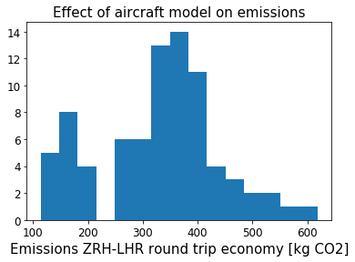
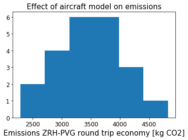

The atmosfair emissions calculator allows the aircraft model to be selected from a list of possibilities. The histograms below show the calculated emissions for a short-haul and a long-haul flight, single passenger, economy, round trip varying only the aircraft model. Atmosfair itself checks that the selected aircraft model has sufficient range to cover the selected flight distance - that's why there are less entries in the long-haul trip. Additionally, I removed a couple of aircraft models that seemed too 'private planey'. Still, there's easily a factor two difference here. It will be interesting to look into where these differences come from.
To illustrate how much the aircraft model can vary for a specific route: The twelve direct Swiss or BA flights ZRH-LHR on 2019-09-29 involve seven different aircraft models: Airbus A319, Airbus A320-100/200, Airbus A320neo, Airbus A320 (sharklets), Airbus A321-100/200, Bombardier CS100 and Bombardier CS300. Calculating the CO2 emissions without knowing the aircraft model adds alot of uncertainty.
 Calculators accessed 2019-09-15.